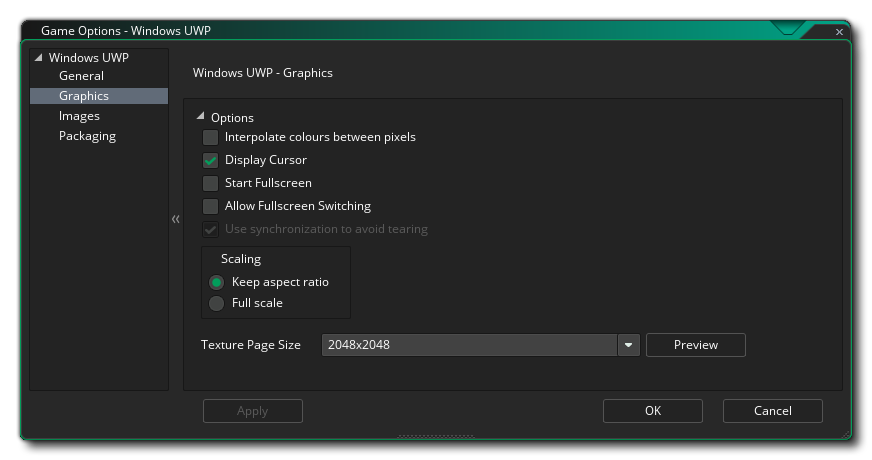
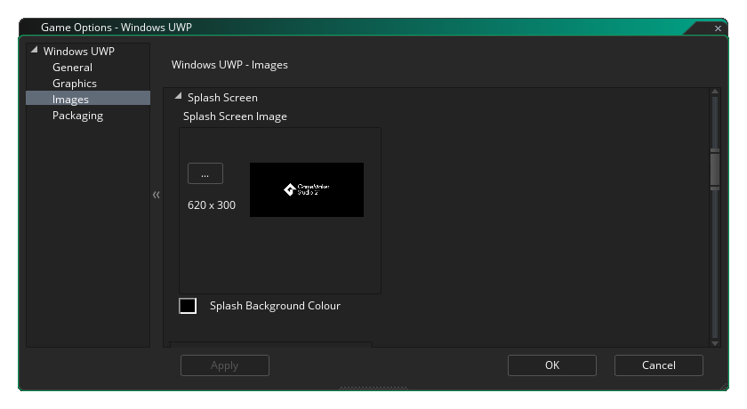

Cette section décrit les différentes options à votre disposition pour contrôler la compilation de vos projets de jeu UWP (Universal Windows Platform). Les différentes sections sont:
La section générale des options UWP est l'endroit où vous pouvez définir les informations sur le produit:
- Nom d'affichage: spécifie le nom convivial de l'application affichée aux utilisateurs (cette chaîne est localisable).
- Nom du package: il s'agit du nom du package que vous avez créé. Celui-ci doit correspondre à celui utilisé pour la clé de développeur que vous avez créée pour le jeu (voir la section Emballage ci-dessous).
- Nom complet du paquet: Il s'agit du "nom abrégé" du paquet et devrait idéalement être identique au nom complet.
- Nom d'affichage de l'éditeur: il s'agit du nom de votre société ou de la personne que vous souhaitez associer en tant qu'éditeur de jeux.
- Version: Le numéro de version de votre jeu.
Une fois la configuration effectuée, vous pouvez sélectionner les différentes orientations sur lesquelles votre jeu peut être exécuté pour une expérience utilisateur optimale. Les options disponibles sont:
- Paysage
- Portrait
- Paysage retourné
- Portrait retourné
Par défaut, tous seront sélectionnés et vous devrez désélectionner ceux dont vous n'avez pas besoin.
Après avoir défini les options d'orientation, vous pouvez ensuite signaler les différentes autorisations nécessaires à votre application UWP à partir des options suivantes:
- Activer la permission Internet: Indique que le jeu a accès à Internet. Ceci est désactivé par défaut.
- Activer l'autorisation du microphone: Indique que le jeu a accès au microphone de l'appareil. Ceci est désactivé par défaut.
- Activer IAP Sandbox: marque le jeu comme utilisant les achats intégrés dans l'application en mode bac à sable. Ceci est désactivé par défaut.
Enfin, vous avez deux options pour définir les versions cible et minimale de la plate-forme Windows. En général, vous ne voudrez pas toucher à ceux-ci et devriez les conserver à leurs valeurs par défaut, mais si vous rencontrez des problèmes de construction (en particulier, si vous ne pouvez pas installer le kit de développement logiciel Windows par défaut, vous devrez les modifier. à ce que vous avez installé), vous pouvez alors définir ces valeurs sur d’autres valeurs. Si vous ne savez pas quelles valeurs définir, créez un nouveau projet UWP dans Visual Studio et examinez les paramètres définis.

Les options graphiques sont celles que vous devez configurer pour déterminer comment votre jeu utilisera la carte graphique de votre périphérique UWP cible. Les options suivantes sont incluses pour que vous puissiez les modifier:
- Interpoler les couleurs entre les pixels: active l'interpolation, qui "lisse" les pixels. Pour les graphismes nets en pixels, il devrait être désactivé, mais si vous avez de beaux mélanges d’alpha et des graphiques lissés, il est préférable de le laisser activé. C’est désactivé par défaut.
- Afficher le curseur: Lorsque cette option est activée, le curseur du système d'exploitation par défaut sera affiché dans votre jeu. Si cette option est désactivée, alors que la souris est au-dessus de la fenêtre du jeu, il n'y aura aucun curseur visible à moins que vous n'en ayez créé un dans le cadre du projet de jeu (activé par défaut).
- Démarrer en plein écran: Lorsque cette option est activée, le jeu démarrera en mode plein écran. Notez que cela n’a aucun effet visible sur un Windows 10 Desktop.
- Autoriser le basculement en plein écran: Lorsque cette option est activée, vous pouvez basculer le jeu entre le mode plein écran et le mode fenêtré à l’aide des raccourcis appropriés. Notez que cela n’a aucun effet visible sur un Windows 10 Desktop.
- Utilisez la synchronisation pour éviter les déchirures: cette option existe, mais a été rendue inactive car la plate-forme UWP nécessite que v-sync soit toujours activé.
- Mise à l'échelle: Ici, vous pouvez choisir de conserver le rapport hauteur / largeur (afin qu'une pièce 4: 3 soit encadrée sur 16: 9) ou de la redimensionner complètement (en étirant l'image pour l'adapter à tout l'écran).
ATTENTION! La désactivation de la surface de l’application désactivera toutes les options de redimensionnement définies dans les options de jeu UWP jusqu’à ce qu’elle soit réactivée. Voir La surface d'application pour plus de détails.Enfin, il est possible de définir la taille de la page de texture. La taille par défaut (et la plus compatible) est 2048x2048, mais vous pouvez choisir entre 256x256 et 8192x8192! Il existe également un bouton intitulé Afficher qui générera les pages de texture pour cette plate-forme, puis ouvrira une fenêtre afin que vous puissiez voir à quoi elles ressemblent. Cela peut être très utile si vous souhaitez voir comment les pages de texture sont structurées et éviter d’avoir des pages de texture plus grandes (ou plus petites) que nécessaire.
REMARQUE: Sachez que plus la taille de la page de texture est grande, moins votre jeu sera compatible avec les appareils UWP dont les spécifications sont moins strictes.
La première partie de la section Images sert à définir le logo du jeu. C’est essentiellement l’icône que votre jeu utilisera dans l’écosystème UWP, et il est à noter que ces images peuvent être transparentes. .png fichiers, auquel cas ils seront dessinés sur la couleur de fond spécifiée dans cette section. Cette couleur d'arrière-plan est également appliquée à la couleur du bouton dans toutes les boîtes de dialogue appartenant à l'application et à la page Description de l'application dans la boutique sur les périphériques. 
Après avoir configuré le logo, vous pouvez définir l' écran de démarrage pour le jeu. Ceci est l'écran qui s'affiche lorsque vous démarrez votre jeu. Il ne peut pas dépasser 620 x 300 pixels. Comme le logo, il peut être transparent. .png fichier, auquel cas la couleur de fond que vous choisissez sera utilisée.
Enfin, vous avez la possibilité de définir les différentes tuiles que votre jeu utilisera sur les différents appareils sur lesquels UWP peut fonctionner. Vous pouvez définir les éléments suivants:
- La petite image en mosaïque est l'image du logo qui apparaît à côté du nom de l'application dans la barre de recherche et dans d'autres zones de l'interface utilisateur. Ce devrait être 44 x 44 pixels.
- L'image en mosaïque moyenne doit être une image de 71 x 71 pixels.
- La vignette suivante est la vignette du logo de la boutique, qui doit mesurer 50 x 50 pixels.
- La mosaïque d'image large est celle qui apparaît lorsque la mosaïque est dans son format large et doit être de 310 x 150 pixels. Si cette image n'est pas fournie, la mosaïque peut uniquement s'afficher au format carré et ne peut accepter les notifications basées sur des types de modèles larges. Étant donné que l'utilisateur peut choisir le format utilisé par la mosaïque, il est recommandé d'inclure une mosaïque d'image large. Notez également que si une mosaïque d'image large est fournie, la mosaïque peut apparaître initialement dans son format large.
- La grande mosaïque d'image correspond au grand format de mosaïque dynamique et doit mesurer 310 x 310 pixels. Notez que cela ne sera utilisé que sur le système d'exploitation de bureau.
Il est à noter que GameMaker Studio 2 dispose d'un outil Project Image Generator qui permet de créer automatiquement toutes les images requises pour les différentes plates-formes cibles pour lesquelles votre jeu est compilé. Si vous utilisez cet outil, vous devez réviser les images créées pour vous assurer qu’elles correspondent à vos besoins.
GameMaker Studio 2 fournit une clé de développeur par défaut pour le développement WindowsUWP, mais il est recommandé de générer la vôtre et de la pointer ici. Pour ce faire, créez un projet vide dans Visual Studio Express, puis stockez dans un endroit sûr une copie du fichier généré automatiquement. *.pfx fichier qu’il aura inclus dans le projet vide (il s’agit de la clé de développeur). Vous devriez alors lier ça *.pfx déposer ici.
Après avoir établi le lien vers le fichier, vous devez cliquer sur le bouton d’ installation associé, puis suivre les instructions de la ligne de commande qui s’ouvrira. Si vous ne le faites pas, les boutons Exécuter / Déboguer (ou appuyer sur F5) échoueront et votre jeu ne pourra pas être testé sur la plate-forme UWP (toutefois, si vous utilisez Créer un exécutable, le processus d'installation de la certification sera automatiquement lancé si *.pfx doit encore être enregistré).
REMARQUE: lorsqu’il s’agit de télécharger votre application dans le magasin, vous devez obtenir le bon *.pfx pour votre titre. Pour ce faire, vous devez associer votre application au Windows Store dans Visual Studio, ce qui permet à Visual Studio de générer une nouvelle *.pfx spécifiquement pour l'application. Il est également intéressant de noter que vous pouvez associer n'importe quelle application au Windows Store dans Visual Studio, ce qui signifie que vous pouvez associer un projet vide à l'application Windows Store et simplement copier le fichier généré. pfx dans un endroit sûr qui peut ensuite être utilisé dans les options de jeu UWP. Vous pouvez trouver des instructions sur la YoYo Games la base de connaissances de YoYo Games.Dans cette section, vous devez également spécifier le nom de l' éditeur utilisé pour générer le certificat de signature. L'entrée doit toujours être précédée de "CN =", par exemple: CN=YoYoGames.
La section Xbox Live des options de jeu UWP vous permet d'activer votre projet UWP pour l'utiliser sur la console Xbox One. L'activation du projet pour la Xbox ici vous permet d'effectuer les opérations suivantes lorsque le projet est exécuté sur une Xbox One:
- Connectez-vous à Xbox Live depuis l'application
- Utiliser l'identité de l'utilisateur Xbox Live d'une manière ou d'une autre dans le projet (par exemple, en affichant l'image de gamertag ou la photo d'un joueur)
Avant de pouvoir effectuer ces opérations, vous devrez toutefois vous assurer que vous avez bien coché la case Activer Xbox Live. Si vous faites partie du programme Microsoft Creators, vous devez également cocher l'option Creators Program App. Si vous faites partie du programme des créateurs, vous devrez ensuite ajouter l' ID du titre et l' ID de configuration du service (des informations supplémentaires sur ces informations sont disponibles auprès de Microsoft ).
Notez qu’à l’heure actuelle, pour tester la fonctionnalité Xbox Live de votre projet, vous devez utiliser Créer un exécutable plutôt que Exécuter, car la sortie UWP Xbox doit utiliser le certificat de signature du Windows Store fourni dans les informations d’ emballage (voir ci-dessus) plutôt que celui temporaire fourni avec GameMaker Studio 2, qui sera utilisé lorsque vous GameMaker Studio 2 sur Exécuter.
Une fois que vous avez activé XBox Live, vous pouvez continuer et utiliser les fonctions XBox Live dans votre projet.